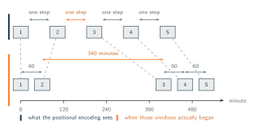

06 · Attention Over Time
Position as Proxy for Time
The encoding answers a question about order.
Every model we have built has been told where each token sits, and none of them has been told when it happened. A positional encoding takes an index, token 1, token 2, token 3, and turns that integer into a vector the model can add to the token. Under the grid from section 03 the third token is the window running from minute 120 to minute 179, so index 3 and hour 3 are the same fact written two ways. That coincidence has held for five sections, which is exactly why nothing has yet forced us to say which of the two the model actually needs.
Pull the two apart and they are different kinds of number (which might seem quite obvious). An index is an ordinal. It says this is the third item, and the only things it can express are order and how many items lie between two of them. A timestamp is a measurement. It says minute 120, in units, on a scale where the distance between two values means something in the world. Everything a positional encoding hands the model is built from the first kind. The shift from position $p$ to position $p+k$ is a fixed rotation because $k$ counts items, and a rule like look two tokens back is learnable because two tokens back is always the same move. Not one step of that ever mentions a minute.
This is fine while the two agree, and false the moment they stop. Suppose the second window began at minute 60 and the third at minute 400. Measured in time they are 340 minutes apart, more than five hours. Measured in indices they are one step apart, exactly like every other neighbouring pair in the sequence. The encoding hands the model a vector that says adjacent, and every rule the model has learned about adjacent pairs is then applied to a pair that is nothing of the sort.

So how exactly can this be fixed? The obvious response is to modify the input we provide to the model. We can begin by examining the most standard encoding method which uses a learned table containing one row for each position. It's easy to see that this approach fundamentally fails to address the problem because the table relies on integer indexing. A third row exists but a fractional row like 4.7 does not. A lookup table operates solely based on position and no amount of training will enable it to understand actual time intervals.
An alternative fix involves providing the model directly with the time gap. We could append the elapsed time since the previous token to each new token, passing 60 for standard gaps and 340 for the irregular third token, and allow the projection layer to process this information. While this provides some benefit, it falls short of a complete solution. The time gap enters the system as part of the token content and influences the value that the token provides. However, the attention score that determines how much of that value is actually applied still relies on queries and keys generated from index-based encodings. Furthermore, knowing the gap to an immediately preceding token does not reveal the distance between any two arbitrary tokens. For instance, if we want to determine the temporal distance between the 2nd token and the 40th token, the model would need to sum 38 separate numbers.
What both attempts share is that they treat time as something to attach to a token and consequently the actual failure lies in how the mechanism compares two separate tokens. Attention asks one question, how well token $i$ matches token $j$, and right now the answer is a function of $i$ and $j$, two places in a list. What we actually want is for it to be a function of $t_i$ and $t_j$, the minutes at which those two windows happened. That is a different thing to ask for, and no positional encoding, learned or computed, was built to provide it.